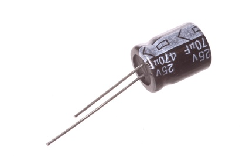
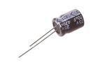
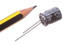

10 mm 470 uF Capacitor (Electrolytic) 25v - CEU470

Summary
Name:
10 mm 470 uF Capacitor (Electrolytic) 25v
ID:
CAPE-10-X-UF470-VA
Hex ID:
CEU470
WebPage:
https://github.com/oomlout/oomlout-OOMP/wiki/CAPE-10-X-UF470-VA
Short URL:
http://oom.lt/CEU470
Revision History:
https://github.com/oomlout/oomlout-OOMP/blob/master/parts/CAPE-10-X-UF470-VA/
Type
Size
Color
Description
Index
CAPE
Capacitor (Electrolytic)
10
10 mm
X
UF470
470 uF
VA
25v
Images
 
About
This part is awaiting a description.
Specifications
Info
Value
Type
Capacitor (Electrolytic)
Size
10 mm
Description
470 uF
Index
25v
Pitch
5 mm
Height
12 mm
Diameter
10 mm
Extra Details
Spotted a mistake, want to add more? Let us know
oomp@oomlout.com
All images and resources are licensed [CC BY-SA] unless otherwise stated (ie. the datasheets)